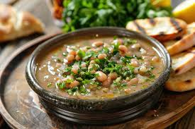

Must-Try Egyptian Classics

Koshary
A hearty, delicious mix of lentils, rice, pasta, chickpeas, topped with a spicy tomato sauce and crispy onions — Egypt’s ultimate street food.
Fatta
Layers of crispy bread, rice, and tender meat drenched in garlicky tomato sauce, served during festive celebrations and special occasions.
Molokhia
A green leafy soup with a unique slimy texture, flavored with garlic and coriander, often served with rice and meat.
Mahshi
Vegetables like zucchini, peppers, and vine leaves stuffed with spiced rice and herbs — a perfect vegetarian delight.

Ful Medames
Slow-cooked fava beans, usually served with olive oil, lemon, garlic, and maybe some boiled eggs. Breakfast champion!.